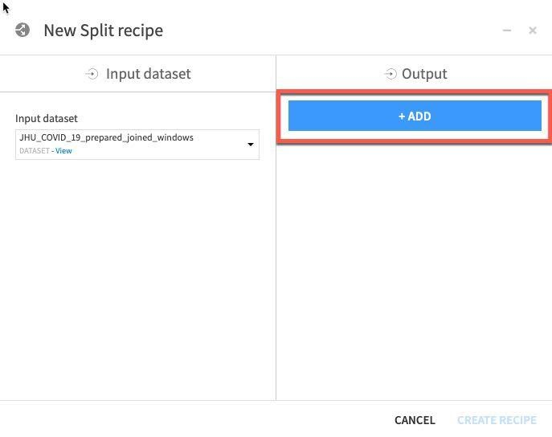
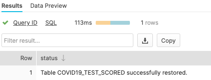

This Snowflake Quickstart introduces you to the basics of using Snowflake together with Dataiku Cloud as part of a Data Science project. We'll be highlighting some of the well-integrated functionalities between the two cloud-based technologies. It is designed specifically for use with the Snowflake free 30-day trial, and the Dataiku Cloud trial version via Snowflake's Partner Connect. In addition, we'll also take a look at Snowflake's Data Marketplace and how 3rd party data sets from there can enrich and support your Data Science projects.
This Snowflake lab will be done as part of a theoretical real-world "story" with COVID-19 data to help you better understand why we are performing the steps in this lab and in the order they appear.
The story of this lab is examining incidents of COVID-19 in Europe along with changes in mobility. We would like to use historical data to predict mortality rates for COVID-19 and see if changes in mobility is a significant factor driving this.
The source of data is the Starschema Covid-19 database from the Snowflake Marketplace. After analyzing the data in Snowflake's Snowsight, we will move over to Dataiku to perform some transformations (that are pushed down to Snowflake for computation) and then create a predictive model.
The specific tables we'll use are the JHU_COVID_19 dataset which reports case numbers by province and day as well as the GOOG_GLOBAL_MOBILITY_REPORT which reports the percent change in mobility across various areas (e.g., grocery stores, parks, etc.) by a state/region of a country and day.
Finally, we will write those predictions back into Snowflake.
Upon completion of the lab you should be able to grasp how to work a simple Data Science project using Snowflake and Dataiku.
Prerequisites
- Use of the Snowflake free 30-day trial environment
- Basic knowledge of SQL, and database concepts and objects
What You'll Learn
The exercises in this lab will walk you through the steps to:
- Create databases, tables, views, and warehouses in Snowflake
- Access data in Snowflake using the Data Marketplace
- Use Snowflake's "Partner Connect" to seamlessly create a Dataiku DSS Cloud trial
- Create a Data Science project in Dataiku and perform analysis on data via Dataiku within Snowflake
- Create, run, and evaluate simple Machine Learning models in Dataiku
- Write results back to Snowflake
- Use cloning and time travel for test environment
What You'll Build
- A Snowflake and Dataiku integration to create, run, and evaluate COVID-19 machine learning models.
If you haven't already, register for a Snowflake free 30-day trial.
Please select a region which is physically closest to you, and select the Enterprise edition so you can leverage some advanced capabilities that are not available in the Standard Edition.
After registering, you will receive an email with an activation link and your Snowflake account URL. Bookmark this URL for easy, future access. After activation, you will create a user name and password. Write down these credentials.
Resize your browser window, so that you can view this guide and your web browser side-by-side and follow the lab instructions. If possible, use a secondary display dedicated to the lab guide.
Download lab resources:
Logging Into the Snowflake User Interface (UI)
Open a browser window and enter the URL of your Snowflake 30-day trial environment. You should see the login screen below. Enter your unique credentials to log in.

Close any Welcome Boxes and Tutorials
You may see "welcome" and "helper" boxes in the UI when you log in for the first time. Also a "Enjoy your free trial..." ribbon at the top of the UI. Minimize and close them by clicking on the items in the red boxes in the screenshot below.

Navigating the Snowflake UI
First let's get you acquainted with Snowflake! This section covers the basic components of the user interface to help you orient yourself. We will move left to right in the top of the UI.
The top menu allows you to switch between the different areas of Snowflake:

The Databases tab shows information about the databases you have created or have privileges to access. You can create, clone, drop, or transfer ownership of databases as well as load data (limited) in the UI. Notice several databases already exist in your environment. However, we will not be using these in this lab.

The Shares tab is where data sharing can be configured to easily and securely share Snowflake table(s) among separate Snowflake accounts or external users, without having to create a second copy of the table data.
The Warehouses tab is where you set up and manage compute resources (virtual warehouses) to load or query data in Snowflake. Note a warehouse called "COMPUTE_WH (XS)" already exists in your environment.

The Worksheets tab provides an interface for submitting SQL queries, performing DDL and DML operations and viewing results as your queries/operations complete. The default "Worksheet 1" appears.
In the left pane is the database objects browser which enables users to explore all databases, schemas, tables, and views accessible by the role selected for a worksheet. The bottom pane shows results of queries and operations.
The various windows on this page can be resized by moving the small sliders on them. And if during the lab you need more room to work in the worksheet, collapse the database objects browser in the left pane. Many of the screenshots in this guide will have this database objects browser closed.

At the top left of the default "Worksheet 1," just to the right of the worksheet tab, click on the small, downward facing arrow, select "Load Script", then browse to the "lab_scripts.sql" file you downloaded in the prior module and select "Open". All of the SQL commands you need to run for the remainder of this lab will now appear on a new worksheet.
Do not run any of the SQL commands yet. We will come back to them later in the lab and execute them one at a time

Rename the newly created worksheet to Covid19 by clicking on the worksheet name and typing Covid19 and pressing ‘Enter'


The History tab allows you to view the details of all queries executed in the last 14 days in the Snowflake account (click on a Query ID to drill into the query for more detail).

If you click on the top right of the UI where your username appears, you will see that you can change your password, roles, or preferences. Snowflake has several system defined roles. You are currently in the default role of SYSADMIN. We will change this in the next part of the lab.

Create Dataiku trial via Partner Connect
At the top right of the page, confirm that your current role is ACCOUNTADMIN, by clicking on your profile on the top right.

Click on Partner Connect at the top bar and scroll down to find Dataiku.

Click on the Dataiku tile. This will launch the following window, which will automatically create the connection parameters required for Dataiku to connect to Snowflake. Snowflake will create a dedicated database, warehouse, system user, system password and system role, with the intention of those being used by the Dataiku account.
Database: PC_DATAIKU_DB
Warehouse: PC_DATAIKU_WH (X-Small)
System User: PC_DATAIKU_USER
System Password: Autogenerated & Randomized
System Role: PC_DATAIKU_ROLE
Role PUBLIC will be granted to the PC_DATAIKU_RLE
Role PC_DATAIKU_ROLE will be granted to the SYSADMIN role
Database(s) with USAGE privilege granted: leave this blank
We'd like to use the PC_DATAIKU_USER to connect from Dataiku to Snowflake, and use the PC_DATAIKU_WH when performing activities within Dataiku that are pushed down into Snowflake.
This is to show that a Data Science team working on Dataiku and by extension on Snowflake can work completely independently from the Data Engineering team that works on loading data into Snowflake using different roles and warehouses.
Note that the user password (which is autogenerated by Snowflake and never displayed), along with all of the other Snowflake connection parameters, are passed to the Dataiku server so that they will automatically be used for the Dataiku connection. DO NOT CHANGE THE PC_DATAIKU_USER password, otherwise Dataiku will not be able to connect to the Snowflake database.


Click on Connect. You may be asked to provide your first and last name. If so, add them and click Connect.

Your partner account has been created. Click on Activate to get it activated.

This will launch a new page that will redirect you to a launch page from Dataiku.
Here, you will have two options:
- Login with an existing Dataiku username
- Sign up for a new Dataiku account
We assume that you're new to Dataiku, so ensure the "Sign Up" box is selected, and sign up with either GitHub, Google or your email address and your new password. Click sign up.

When using your email address, ensure your password fits the following criteria:
- At least 8 characters in length
- Should contain: Lower case letters (a-z) Upper case letters (A-Z) Numbers (i.e. 0-9)
You should have received an email from Dataiku to the email you have signed up with.

Activate your Dataiku account via the email sent.
Review Dataiku Setup
Upon clicking on the activation link, please briefly review the Terms of Service of Dataiku Cloud. In order to do so, please scroll down to the bottom of the page. Click on I AGREE.


Next, you'll need to complete your sign up with the following information:
- First Name
- Last Name
- Job Title
- How would you define yourself (drop-down options for roles)
- Company Name
- Company Size (drop-down)
- What is your country (drop-down)
- What is your goal with Dataiku Cloud? (optional)
Then click on Start.


- You will be redirected to the Dataiku Cloud Launchpad site. Click GOT IT! to continue.


You've now successfully set up your Dataiku trial account via Snowflake's Partner Connect. We are now ready to continue with the lab. For this, move back to your Snowflake browser.

Getting COVID-19 Data from the Snowflake Marketplace
To access the Snowflake Marketplace, follow the below steps.
Make sure that your current role is ACCOUNTADMIN (as shown in the top right). If not, update your role by clicking on your profile on the top right.

Select the Data Marketplace icon at the top and click on Explore the Snowflake Marketplace.

If it's your first time using the Data Marketplace, the following screens will appear. Click Sign in to continue and enter your login information in the next step.

You will now be redirected to the Snowflake Marketplace.
It will display the variety of external data sources across a variety of industries. The Search box in the top right allows you to search for a listing or data provider. The side menu on the left shows the categories of data available in the Data Marketplace.
Since we'll be looking at COVID-19 data, select the Health Category on the left-hand-side by clicking on it.

A number of COVID-19 data sets are shown here - we will be using Starschema's COVID-19 Epidemiological Data. Click on that tile.

The Starschema dataset provides several tables, with daily COVID-19 incident data from the John Hopkins University, as well as local health authorities such as the European Centre for Disease Prevention and Control (ECDC), the German Robert-Koch-Institut (RKI) and American authorities. In addition, demographic data, mobility data and information about global government measures is made available in this dataset.
Ensure you're in the ACCOUNTADMIN role on the top right; if not, click on the person icon to change it. Then click Get Data.

Change the Database name to COVID19. In addition, select all the roles to Public, so that you can access the database (click off the selection box once you have selected public) and Accept Snowflake's consumers terms and Starschema's terms of use, and finally click on Create Database.

Click View Database for a quick peek into the database and its schemas. You'll see two schemas: INFORMATION_SCHEMA and PUBIC. Click on PUBLIC to see the available tables:


If you enter JHU in the top right hand filter you will see all tables with data sourced from John Hopkins University

You will also see that All Types has been selected and you are using the ACCOUNTADMIN role by default.
Further to the right you will see the Database Details including: the owner of the share, number of tables and views in this database, source, share name and which data provider shared the information with you.

You have now successfully subscribed to the COVID-19 dataset from StarSchema which is updated daily with global COVID data. Note that we didn't have to create databases, tables, views, or ETL processes. We simply can search for and access shared data from the Snowflake Marketplace.
Analysing COVID-19 using Snowsight
Now that we've done some preparation work, let's do some primarily data analysis on our COVID-19 data. For this we will use Snowsight, the SQL Worksheets replacement, which is designed to support data analyst activities.
Snowflake recently released the next generation of it's analytics UI — Snowsight. On top of a redesigned interface, there are many improvements for analysts, data engineers, and business users. With Snowsight, it is easier and faster to write queries and get results and collaboration with others through sharing makes it easier to explore and visualize data across your organization. Snowsight includes many features and enhancements, including:
- Fast query writing: Includes smart autocomplete for query syntax keywords or listing values that match table/column names, data filters and quick access to Snowflake documentation for specific functions.
- Interactive query results: View summary statistics about the data that has been returned by their query, using histograms of the distribution to identify outliers and anomalies.
- Attractive data visualizations: Quickly analyze data without requiring an external analytics/visualization tool, with automatic chart generation and drag-and-drop interface for creating dashboards.
- Sharing and collaboration: Share queries, worksheets, visualizations and dashboards securely among teams.
- Schema browser: Search instantly across databases and schemas accessible by the current session role for tables, views, and columns whose names contain a specified string. Pin tables for quick reference to see column names and data types.
For more information on using Snowsight, see the documentation.
Let's run some preliminary analysis on the two tables that we'll focus on. For this, we will select Worksheets in the top left corner.

If this is the first time you've used Snowsight, you will be prompted to enable it.

Click "Enable Worksheets and Dashboards", and then click on "Import Worksheets"
Open up the script we loaded earlier by clicking on the that COVID19 Worksheet.

In the worksheet, ensure the correct context, on the top right: using the SYSADMIN role and the COMPUTE_WH that was created when your trial account was created.

In addition, select the correct database COVID19 on the top left of the worksheet. 
We'll run a simple analysis of confirmed cases over time for a few European countries, incl. Germany, UK, France, Italy, Spain, The Netherlands, Poland and Sweden.
Run the command below as provided in the script. Highlight the following text in the Covid19 worksheet and hit ‘Run'.

use role SYSADMIN;
use database COVID19;
use warehouse COMPUTE_WH;
select country_region, sum(cases), case_type, date from public.jhu_covid_19 where case_type='Confirmed' and country_region in ('Germany','United Kingdom', 'France', 'Italy', 'Spain', 'Netherlands', 'Poland', 'Sweden') group by date, country_region, case_type;
Your result will include a table of results. Click on Chart to get a simple visualization of the results:

On the right hand side of the chart, change the values as follows:
- Line chart
- SUM(CASES) for the y-axis, to show the sum of confirmed values in a line
- DATE for the x-axis
- Add Column, then Country_region
- COUNTRY_REGION as the country for each of which the sum of confirmed cases will be shown

- Optional: Label the x-axis as "Date" and the y-axis as "Sum of confirmed cases"

We clearly see that the number of confirmed COVID-19 cases rapidly increased in March until mid April, after which - due to several lockdown measures in place - the increase slowed down significantly.
However, with the start of the autumn season in September, we clearly see an exponential and worrying rise in COVID-19 confirmed cases, culminating in over or around 1 million confirmed cases for 3 major European countries.
In today's news, people are typically aware of newly known infections. We can also review just how many people have an active COVID-19 infection (essentially Confirmed cases minus Recovered, which are the ‘Active' case types).
Remain on the chart window, and run the next command, as the execution of this command will result in the corresponding chart:
select country_region, sum(cases), case_type, date from public.jhu_covid_19 where case_type='Active' and country_region in ('Germany','United Kingdom', 'France', 'Italy', 'Spain', 'Netherlands', 'Poland', 'Sweden') group by date, country_region, case_type;

Note that this refers to the sum of active cases on the y-axis.
From here, we can easily deduce that the majority of countries were able to get infections "under control" after the end of April. During summertime, the active infection cases in most countries were relatively stable or had even decreased significantly. With the second wave underway, Europe is seeing exponential growth in active cases with the rise in confirmed cases.
Data Problem
Sometimes you go through the entire process of building a predictive model and the predictions are quite poor and you trace the issue back to data problems. In other cases, such as this one, the data changes with time and the models go bad. After creating the lab we had to return and dig around in the data to see what the problem was. In summary, we used the same Snowsight visualization capabilities as above to determine that for some reason around June 2 and June 3 2021, there were a massive number of "negative deaths" that were throwing off the models. The count should only be a positive number. After some further digging around using Snowsight, it was discovered that Peru reported problematic data that was causing the problems with the model accuracy.
As an optional step to discover this data problem, you can run the following SQL statement:
select DATE, province_state, SUM(CASES)
from public.jhu_covid_19
WHERE CASE_TYPE = 'Deaths'
and DATE >='2021-05-25'
and DATE <='2021-06-06'
and country_region = 'Peru'
group by province_state, DATE
order by province_state, date;
Then create a visualization like this:

You will notice that Peru normally states how many people have died to date from COVID broken out by State but on on June 2nd 2021, most of the deaths were assigned to a new "Unknown" State then reported correctly after that. Later on when we find the difference in total deaths per State per day, this leads to some massive negative death counts all on two days in Peru. There are better ways to fix this data problem but an easy for this lab is to simply filter Peru out of the solution. We will do that in a future step.
Preparing the Data for Further Data Analysis and Consumption
Let's now create views that reference the shared COVID19 tables we'll be using. Switch back to the OLD UI and select the Worksheets tab.


use role PC_DATAIKU_ROLE;
use database PC_DATAIKU_DB;
create or replace view JHU_COVID_19 as select * from COVID19.PUBLIC.JHU_COVID_19;
create or replace view GOOG_GLOBAL_MOBILITY_REPORT as select * from COVID19.PUBLIC.GOOG_GLOBAL_MOBILITY_REPORT;
Notice that we have not selected a warehouse. Statements that create database objects do not utilize a running warehouse, so it's OK to leave this unselected for now.
Now let's navigate to the Warehouses tab. Note the "Create..." option at the top is where you can quickly create a new warehouse. You'll see two virtual warehouses – the COMPUTE_WH that we just used for our analysis, and the PC_DATAIKU_WH that was created when we created our Dataiku account through Partner Connect.
Click on the row of this "PC_DATAIKU_WH" warehouse (not the blue hyperlink that says "PC_DATAIKU_WH") so the entire row is highlighted. Then click on the "Configure..." text above it to see the configuration detail of the "PC_DATAIKU_WH". We will use this warehouse to build, train, and deploy our models in Dataiku.

Let's walk through the settings of this warehouse as there's a lot of functionality here, much of which is unique to Snowflake versus other data warehouses.
NOTE - If you do not have a Snowflake Edition of Enterprise or greater, you will NOT see the "Maximum Clusters" or "Scaling Policy" configurations from the screenshot below. Multi-clustering is not utilized in this lab, but we will still discuss it as it is a key capability of Snowflake.
The "Size" drop-down is where the size of the warehouse is selected. For larger data loading operations or more compute-intensive queries, a larger warehouse will be needed. The t-shirt sizes translate to underlying compute nodes, either AWS EC2, Azure Virtual Machines, or Google Compute Engine Virtual Machines. The larger the t-shirt size, the more compute resources from the cloud provider are allocated to that warehouse. As an example, the 4-XL option allocates 128 nodes. Also, this sizing can be changed up or down on the fly with a simple click.
If you have Snowflake Enterprise Edition or greater you will see the Maximum Clusters section. This is where you can set up a single warehouse to be multi-cluster up to 10 clusters. As an example, if the 4-XL warehouse we just mentioned was assigned a maximum cluster size of 10, it could scale up to be 1280 (128 * 10) AWS EC2 or Azure VM nodes powering that warehouse...and it can do this in seconds! Multi-cluster is ideal for concurrency scenarios, such as many business analysts simultaneously running different queries using the same warehouse. In this scenario, the various queries can be allocated across the multiple clusters to ensure they run fast.
The final sections allow you to automatically suspend the warehouse so it suspends (stops) itself when not in use and no credits are consumed. There is also an option to automatically resume (start) a suspended warehouse so when a new workload is assigned to it, it will automatically start back up. This functionality enables Snowflake's fair "pay as you use" compute pricing model which enables customers to minimize their data warehouse costs.

During or after this lab you should NOT do the following without good reason or you may burn through your $400 of free credits more quickly than desired:
- Disable auto-suspend. If auto-suspend is disabled, your warehouses will continue to run and consume credits even when not being utilized.
- Use a warehouse size that is excessive given the workload. The larger the warehouse, the more credits are consumed.
We are going to use this virtual warehouse for our Dataiku work. However, we are first going to slightly increase the size of the warehouse to increase the compute power it contains.
Change the size of this data warehouse from X-Small to Medium. Then click the "Finish" button.

For this module, we will login into the Dataiku hosted trial account and create a Dataiku project.
Creating a Dataiku Project
Go back to your Dataiku Cloud instance. Click on OPEN DATAIKU DSS to get started.

Once you've logged in, click on +NEW PROJECT and select Blank project to create a new project.

Name the project Covid-19 as we'll be working with COVID-19 data.
Note that the Project key will be automatically populated when creating a name, but you're free to change it directly.
Success! You've now created the COVID-19 project.

Click on Got it! to minimize the pop-up on Navigation and help in DSS and return to the project home screen.
Review the Dataiku DSS page. There are a few things to note from the project landing page on an example project:
- The project name, image associated with the project, collaborators, and optional tags:

- The number and types of objects in the project.

- A description of the project written in markdown, can link specific Dataiku objects (e.g., datasets, saved models, etc.) in the description:

- Summary of project (history is saved in a git log) as well as a Chat function for better collaboration:

Import Datasets
Import JHU_COVID_19 and GOOG_GLOBAL_MOBILITY_REPORT datasets
Click on +IMPORT YOUR FIRST DATASET

Under SQL, select Snowflake

To load the JHU table, type in JHU_COVID_19 (ALL UPPERCASE) under Table and PUBLIC under Schema. Then click TEST TABLE to test the connection:

If successful click CREATE to create the table:

Return to the flow by clicking on the flow icon in the top left (keyboard shortcut G+F):

Repeat the steps to load the GOOG_GLOBAL_MOBILITY_REPORT table:
From the flow click +Dataset

Point to SQL databases then Snowflake:

Type GOOG_GLOBAL_MOBILITY_REPORT (ALL UPPERCASE) under Table and PUBLIC under Schema:

Click Test Table, then click Create:

Go back to flow (keyboard shortcut G+F). Your flow should now look like this:

Double click on the JHU_COVID_19 dataset

The JHU_COVID_19 table contains data on a location and day basis about the number and types of cases (Active, Confirmed, Deaths, Recovered) that day.
Dataiku reads a sample of 10000 rows by default. The sampling method can be changed under Configure Sample but for this lab we can leave it as the default:

Dataiku automatically detects data type and meaning of each column. The status bar shows how much of the data is valid (green), invalid (red), and missing (grey). You can view column Stats (data quality, distributions) by clicking Quick Column Stats button on the right:

Click the close button when you are finished:

If you would like a deeper view click on a column name, then select Analyze to see column-level statistics (of the sample!)


Navigate back to the flow. As a reminder you can always do this simply by clicking the Flow menu item in the top left corner or by using one of the many keyboard shortcuts G+F.

You should now see your two datasets in the flow once more:

Explore the GOOG_GLOBAL_MOBILITY_REPORT dataset by double clicking from the flow:

The GOOG_GLOBAL_MOBILITY_REPORT table contains data on a location and day basis about the percent change in movement across several categories (grocery stores and pharmacies, parks, etc.) More information about this dataset is here.
Navigate back to the flow. Either by clicking the Flow menu item in the top left corner or by using the keyboard shortcut G+F.
Data Preparation
Group. We'll start by performing some simple aggregations on our two datasets. This will help us understand changes in mobility and new cases of COVID-19 across geographic regions. To do that we'll use the Group recipe.
Single click the JHU_COVID_19 table and then select Group under Visual recipes on the panel on the right:

Select COUNTRY_REGION in the Group By dropdown, Click Create Recipe:

We'll want to add some additional keys to group on.
In the top section Group Keys use the Select key to add dropdown followed by the ADD button to add grouping keys for PROVINCE_STATE, DATE and CASE_TYPE
In the same section uncheck the Compute count for each group option in the centre of the screen as we don't require this stat.
We'd like to see new cases so in the main Per field aggregations section locate the field Difference add the aggregation Sum.
Your screen should now look like this:

There are four case types in the John Hopkins data but we only want to use and predict using Deaths and Confirmed. So, we will filter out Active and Recovered records. We will also filter out the problematic Peru data as discovered in the previous section.
To do this:
- Select Pre-Filter on the left of your Group recipe screen.
- Toggle the Filter on and specify in the dropdown to Keep only rows that satisfy: ‘all the following conditions'
- Select CASE_TYPE in the dropdown, then ‘is different from' then enter Recovered
- Click on the + Add A Condition button and select CASE_TYPE again in the dropdown, then ‘is different from' then enter Active
- Click on the + Add A Condition button and select COUNTRY_REGION in the dropdown, then ‘is different from' then enter Peru
Your screen should now look like this:

Then click RUN on the bottom left to execute the recipe - make sure the compute engine is In-database (SQL) to push computation down to Snowflake (click the three cogs to change if required).

Since we are making changes to the schema we will receive a warning of this, go ahead and click Update Schema.

The job will run and if all went well you will receive a Job Succeeded message at the foot of the page:

Return to the flow either by clicking the Flow icon in the top left or press G + F on the keyboard:

We will now aggregate on the Mobility dataset from Google. From the flow single click on GOOG_GLOBAL_MOBILITY_REPORT and select Group from the Visual Recipes. Group by COUNTRY_REGION and click Create Recipe.

In the Group stage of the recipe add PROVINCE_STATE and DATE as additional grouping keys in the same way as previously.
Either individually or using the mass Actions button check the following:
- GROCERY_AND_PHARMACY_CHANGE_PERC
- PARKS_CHANGE_PERC
- RESIDENTIAL_CHANGE_PERC
- RETAIL_AND_RECREATION_CHANGE_PERC
- TRANSIT_STATIONS_CHANGE_PERC
- WORKPLACES_CHANGE_PERC
Your screen should now look like this:

Click the Actions Dropdown and apply Avg to your six selected columns. As before uncheck the Compute count for each group since we don't need this.

Then click RUN on the bottom left to execute the recipe - make sure the compute engine is In-database (SQL)
As before we are making changes to the schema we will receive a warning of this, go ahead and click Update Schema and once you have explored your new aggregated dataset.
Press G + F to return to the flows screen.
The JHU_COVID_19 table includes a column for case type and the difference summed from the previous row that we grouped by country regions, state, date and type in our earlier step.
However, we'd like to change the data format so that case type and difference are their own separate columns (i.e. Confirmed & Deaths are separate columns). We can do this with a Pivot recipe.
From the flow single click the JHU_COVID_19_by_COUNTRY_REGION and then select Pivot:

In the dropdown Pivot By select CASE_TYPE.
Click CREATE RECIPE:

You should see this screen:

First, let's use one of the examples from the top left Examples box. Select Pivot Table.
Then select some Row identifiers. These are columns that will be retrieved as is in the output table. Click "Add new column" under Row identifiers.

Select the following columns: COUNTRY_REGION, PROVINCE_STATE and DATE
(Note: The order you add the row identifiers here simply reflects the order the columns will appear in the output dataset. Although not strictly important if you wish your project datasets to mirror the ordering of the ones in this guide stick to the order below)

Next, the section Populate content with will define the values that go under the new columns with CASE_TYPE. There are a number of options for aggregations - count of values, min, max, etc.
First, deselect the Count of records:

Then click on the Add new dropdown.
We only have one value here so select Difference_sum. The default aggregation is count which we do not want. To change this click the down arrow to the left of count:

Under Aggregation instead of Count, select Min.

You should now have the following settings. Go ahead and RUN the Pivot recipe

Explore your new dataset to make sure the new columns have properly been created by returning to the flow and double clicking the new dataset.
We can see we have our new columns for types of case (Confirmed and Deaths) and also see there is quite a lot of missing data for PROVINCE_STATE. We'll address that in the next section.
If you have time it's also worth left clicking on the Deaths_DIFFERENCE_sum_min column and selecting Analyze. What do you notice about the data distribution? It seems there is a pretty big outlier (run on Whole data rather than Sample if you do not see it). Again that is something we will want to address in the next section.

Return to the flow and at this stage your project flow should look like this:

Whilst the recipes we have used so far such as grouping and pivots perform a given task and are likely already familiar to you, the Prepare recipe is a little different. Think of it like a tool box but instead of having tools for DIY like hammers, chisels and tape measures we have tools for data cleansing, normalization and enrichment. In DSS terminology we call those ‘tools' processors and in the Prepare recipe you use them in a visual and interactive way.
There are a wide range of processors we can use in the Prepare recipe and we are going to use a few of the simplest ones to help us with our missing data.
From the flow click on the grouped and pivoted JHU dataset, then select the Prepare recipe:

We can see that the automatically generated output dataset name is starting to get a little unwieldy after a few transformations.

Let's trim that to JHU_COVID_19_prepared and then click Create Recipe.

We'd like to handle the missing data in our PROVINCE_STATE column, there are many ways the Prepare recipe can help with this and we are going to use probably the simplest technique of all and fill empty rows.
Left click on the column title PROVINCE_STATE then select More actions and Fill empty rows with...

In the break out box simply type NA and click OK.

The step gets added to the left. Next we'll remove rows if COUNTRY_REGION or DATE is empty.
As well as context sensitive options like we just used you can also access the full library of processors.
Click on the +ADD A NEW STEP button. There are a lot of options here so select Data Cleansing from the Processor library and select Remove rows where cell is empty processor (you can also use the search box when you may not be sure where a processor lives or wish to explore what options are available for a given task).

In the step created on the left select the multiple column option and click the +ADD A COLUMN button to first add COUNTRY_REGION and then add the DATE column.

Finally let's address the outlier we found when we analyzed the Death_DIFFERENCE_sum_min column after we pivoted.
Click the +ADD A NEW STEP button again to bring up the processor library. This time check the Filter Data section and select the Filter rows/cells on value processor. Set the action dropdown to Remove matching rows, the column to DATE, click the blue +ADD VALUE option and enter a date of 2020-08-31
NOTE: We are working on a live dataset that is regularly updated and amended, if errors such as this have been purged from the JHU dataset feel free to skip this step.


Before running the recipe check which execution engine will be used. If it is set to Local stream then click on the three cogs and select In-database (SQL) and click RUN to push the computation to Snowflake.


Press G + F to return to the flows screen
We want to perform the same simple data cleaning steps on our grouped Google Mobility data. Rather than repeat the process simply single click on the previously created prepare recipe in the flow and select Copy from the Actions menu on the right.

In the copy break-out box click the drop down box under Replacement for and find our earlier grouped mobility dataset GOOG_GLOBAL_MOBILITY_REPORT_by_COUNTRY_REGION (NOTE: make sure you select this dataset and not the original GOOG_GLOBAL_MOBILITY_REPORT)
We need to type an output name, call the dataset GOOG_prepared and click Create Recipe:

Click RUN to execute the copied recipe and select Update Schema when prompted.
Now that we've applied our transformations, let's join the JHU and GOOG tables.
Press G + F to return to the flows screen
Left click on JHU_COVID_19_prepared then hold down the shift key and also left click on GOOG_prepeared. This will update the visual recipes in the right hand panel to only those applicable to multiple datasets. Choose the Join recipe.

Click on CREATE RECIPE.

Dataiku automatically detects potential keys to join on. The default join type is a Left Join. We want to change this to an Inner join so we only keep matches. To change the join type and conditions, click on the = sign between one of the keys.

Select Join Type, then select Inner Join and then Close.

Accept the remaining defaults and click on RUN.

Now we have explored, cleaned, aggregated and joined our data, we now want to create some features. We'd like to compute some lag features to see if past trends can help predict future ones when we start modelling. We can use the Window recipe for this (and much more).
A window function performs a calculation across a set of table rows that are somehow related to the current row. This is comparable to the type of calculation that can be done with an aggregate function. But unlike regular aggregate functions, use of a window function does not cause rows to become grouped into a single output row — the rows retain their separate identities.
In other words, unlike the Group recipe we used earlier, a Window recipe does not reduce the number of rows in a dataset. It creates new columns in a dataset that are the results of computations that use all rows in a "window", that is, a subset, of all rows of the dataset.
Press G + F to return to the flows screen
Click on the JHU_COVID_19_prepared_joined dataset, then the Window recipe. In the New window recipe screen accept the defaults and click CREATE RECIPE:


Under Window definitions, toggle on Partitioning Columns then select COUNTRY_REGION and PROVINCE_STATE. As we are creating historical lag variables lets go ahead and toggle on Order Columns and select DATE:

Click on the Aggregations step on the left and select all columns except the ones we used for partitioning and ordering (COUNTRY_REGION, PROVINCE_STATE and DATE). Rather than individually select each aggregation click the down arrow on the Action button to perform a mass action.

Retrieve is already selected, check Value in a previous row and enter 1,2,7,14 in each lag box (this last step will need to be done individually). This gives us the previous day's value, the day before, one week and two weeks ago.

RUN the recipe (make sure the engine is In-database and Update Schema). Also note all the new columns (features) this recipe is creating in the schema changes dialog box.

Press G + F to return to the flows screen
Flow Check: Your flow should look like this:

Optional Data Preparation Steps
There are plenty of additional data prep steps that we do not have time to cover today. For example:
- Normalize numerical features (either in a visual Prepare recipe or SQL recipe)
- Create additional features in the Window recipe
- Many more - feel free to explore outside of this lab!
Machine Learning
Before applying a machine learning model, we will split the data by:
- 80% of data → train
- 20% of data → test
Select the joined dataset and then the Split recipe:

Click ADD to specify the two datasets (train and test):

Name one of the datasets train and then click CREATE DATASET:

Repeat for test - click ADD, then name dataset test, then click CREATE DATASET.

Once you've created both datasets, click CREATE RECIPE:
For splitting method, select Dispatch percentiles of sorted data:

Sort by date and specify a standard 80/20 split for train/test:

Finally select the Pre-Filter stage. We only want to keep rows where the death difference is greater than zero so toggle on Filter, then select Deaths_DIFFERENCE_sum_min and specify is greater than (>) 0.

RUN the Split recipe:
Now we will start our modeling. As a reminder we are looking to use our historical data and the features we created in the flow to try to predict changes in death rates.
Press G + F to return to the flows screen
From the flow single click the train set and then click LAB:

Select AutoML Prediction:

Select our target variable Deaths_DIFFERENCE_sum_min, then select Quick Prototypes and Create:

Select the DESIGN tab to configure your model training parameters. Under the Train/Test Set section on the left of the screen, enable TIME ORDERING and set DATE as the time variable. Since we are not working with a huge dataset we can go ahead and set the Sampling Method to No Sampling (whole data):

Next select the Features Handling section. This is where we can toggle features (should they be used during machine learning? How should variable type be handled if it is used?). For our prediction we will work with just numerical data so let's toggle off COUNTRY_REGION, PROVINCE_STATE and DATE. The remaining numerical features can remain as set allowing for rescaling prior to training.

Finally select the Algorithm section. We have many options here but let's concentrate on some simple regression and toggle on only Ridge Regression and Lasso Regression. Once done, click on the Train button (top right) to train the models.

You can optionally name your training session and give a description or just leave blank. Click Train again.

DSS will spin up resources and train the model(s) in line with our design settings. For the first session we can see that the Lasso regression outperformed the Ridge regression in regards to the metric we're evaluating for (R2 score in this case where the closer to 1 the better).
Drilldown into the details of the best performing model either by clicking on its name in the session window or the results window:

We have a number of tools and visualizations here to help us both interpret the model and better understand its performance. Let's take a look at the coefficients by clicking on the Regression coefficients option on the left under the INTERPRETATION menu, perhaps unsurprisingly recent deaths are important but so too are residential changes for the training session run.
Note: When in the model summary screen, if you ever wish to return to your model training and design screen just click on Models at the top.

Under the Performance section on the left hand menu click on Scatter Plot:
If the model was perfect all the points would be on the diagonal line. This would mean that the predicted values are exactly equal to the actual values. The points below the line are underestimates, above the line are overestimates. Your general aim is to minimize the distance from the points to the diagonal.
This example could be improved on, but is reasonable for a first run:

Let's also click on Subpopulation analysis which is under the Interpretation menu. This can be useful for assessing if our model behaves the same across different subpopulations. In our case let's analyse by country. Select COUTRY_REGION from the dropdown and click COMPUTE. In my example we can see that while the model performed well on data for the US, Mexico, and India it did not do so well in many other countries.

This is something we would certainly want to explore further and we would now begin an iterative process of experimentation/refinement to understand and improve our model so feel free to work on your model (and data flow) after the lab but for now lets go ahead and deploy our model.
Click on DEPLOY button on the top right and then accept the defaults and click CREATE:

Now our model is deployed to our flow:

For our final task we will score our deployed model against our test dataset to evaluate model fit. Single click on the model in the Flow and then select Score from the actions menu:

Apply our test dataset as the Input dataset and click Create Recipe:

Finally ensure your execution engine is set to In-Database (SQL) and Run.
Congratulations! You have built and scored your model.
Now we're going to look at the Snowflake table where we've written the predictions.
Switch back to the Snowsight Tab and set the context by running:
use role sysadmin;
use warehouse compute_wh;
use database pc_dataiku_db;
Now run the following SQL to see the scored data from the Dataiku model written back to Snowflake. Your table name will be something like this:
show tables like '%scored%';
select * from "COVID19_TEST_SCORED_space-3a316aed-dku_node-df3ee930";
Use the name returned from the ‘show tables' command and paste in the select statement.
Now we can view the data on a chart from our results:
Add Column and select ‘Country_region'

Create an Environment for the Testing Team via Cloning
Snowflake allows you to create clones, also known as "zero-copy clones" of tables, schemas, and databases in seconds. A snapshot of data present in the source object is taken when the clone is created, and is made available to the cloned object. The cloned object is writable, and is independent of the clone source. That is, changes made to either the source object or the clone object are not part of the other.
A popular use case for zero-copy cloning is to clone a production environment for Development & Testing to do testing and experimentation without (1) adversely impacting the production environment and (2) eliminating the need to set up and manage two separate environments for production and Development & Testing.
Let's return to the old UI and select the worksheet Covid19.
Run the following command in the worksheet to create a development (dev) database.
use role sysadmin;
use warehouse compute_wh;
use database pc_dataiku_db;
use schema public;
create database dataiku_test_db clone pc_dataiku_db;
If closed, expand the database objects browser on the left of the worksheet. Click the small Refresh button in the left-hand panel and expand the object tree under the DATAIKU_TEST_DB database.
Check that you can see a new table under the DATAIKU_TEST_DB database. The development team now can do whatever they want with these tables, including even deleting without having any impact on the production tables or any other objects.

Snowflake's Time Travel capability enables accessing historical data at any point within a pre-configurable period of time. The default period of time is 24 hours and with Snowflake Enterprise Edition it can be up to 90 days. Most data warehouses cannot offer this functionality; with Snowflake it is easy!
Some useful applications of this include:
- Restoring data-related objects (tables, schemas, and databases) that may have been accidentally or intentionally deleted or updated
- Duplicating and backing up data from key points in the past
- Analyzing data usage/manipulation over specified periods of time
We will run through the following scenarios. 1: A user thinks that all testing is complete and decides to drop a temporary table. Unfortunately they drop the wrong table! 2: A user updates a table but forgets the where clause. The change is made to all rows in the table! 3: Create a clone of a table at a point in time 4: Roll back all changes made to a test table to refresh the table for testing
Drop and Undrop a Table
First let's see how we can restore data objects that have been accidentally or intentionally deleted.
Let's set the proper context:
use database dataiku_test_db; use schema public;
Let's find the name of the table we are going to work with:
show tables like '%scored%';
From the results, you can expand the name column and copy the table name that will look something like ‘COVID19_TRAIN_space-3a316aed-dku_node-df3ee930'
To make life easier, we will rename this table. Run the following SQL:
Alter table "<table name from above>" rename to di_train;Example : alter table "COVID19_TEST_SCORED_space-3a316aed-dku_node-df3ee930" rename to covid19_test_scored;
From the worksheet, run the following command which will drop (remove) the covid19_train table:
drop table covid19_test_scored;
Now run a SELECT statement on the covid19_train table. In the "Results" pane you should see an error because the underlying table has been dropped.
select * from covid19_test_scored limit 10;

Now restore the table:
undrop table covid19_test_scored;
The covid19_test_scored table should be restored.

Now run a SELECT statement on the covid19_train table. In the "Results" pane you should see data because the underlying table has been restored.
select * from covid19_test_scored limit 10;
Roll Back a Table
Now let's look at rolling back a table to a previous state to fix an unintentional DML error that replaces all the province_state names in the covid19_test_scored table with the word "oops."
Run a query that returns the top 20 Locations - this is what it should look like before update:
select province_state as "Location", count(*) as "count"from covid19_test_scoredgroup by 1order by 2 desclimit 20;
Run the following command that replaces all of the province names in the table with the word "oops".
update covid19_test_scored set province_state = 'oops';
Now run a query that returns the top 20 Locations - notice how we've screwed up the station names so we only get one row:
select province_state as "Location", count(*) as "count"from covid19_test_scoredgroup by 1order by 2 desclimit 20;

Normally, we would need to scramble and hope we have a backup lying around. But in Snowflake, we can simply review the history to find transactions that ran against the database. Let's change the role in the main UI window to sysadmin:

Click on the History tab:

Here you can see all of the commands that you have run against Snowflake. Let's find the command that caused the issue. If you see a filter go to 7.2.7.

If you see no filter, please click ‘Add a filter'

Change filter to ‘SQL Text' and ‘oops' like :

Click on the Query ID for the SQL that ran the incorrect update statement. Highlight the Query Id and copy to your clipboard:

Before we make any changes, we can check to see if this transaction was the one that caused the issue. Run the following SQL replacing the Query Id that you copied earlier:
select province_state as "Location", count(*) as "count" from covid19_test_scored before(statement => '01982883-0042-3ced-0000-01f1000463fe') group by 1 order by 2 desc limit 20;
Now that we have validated that this is the correct SQL, let's be safe and create a clone with the original values first, using the following SQL, again using the Query ID from earlier:
create or replace table covid19_test_scored_rewind clone covid19_test_scored before(statement => '01982883-0042-3ced-0000-01f1000463fe');
Run the SELECT statement again to check that the province_state names have been restored in the newly cloned table:
select province_state as "Location", count(*) as "Count"from covid19_test_scored_rewindgroup by 1order by 2 desclimit 20;

Now that we're happy the clone has the correct values, we will use another create feature in Snowflake and swap the 2 tables over. We will rename the newly created clone to the main table name and rename the broken table to the clone name. Use the following SQL to Swap names:
alter table covid19_test_scored_rewind swap with covid19_test_scored;
Run the SELECT statement again to check that the province_state names have been restored in the newly swapped table:
select province_state as "Location", count(*) as "Count"from covid19_test_scoredgroup by 1order by 2 desclimit 20;
Congratulations, you have now completed this lab! Let's wrap things up in the next, and final, section.
Lastly, if you would like to reset your environment by deleting all the objects created as part of this lab, run the SQL below in a worksheet.
Run this SQL to set the worksheet context:
use role accountadmin;
use warehouse compute_wh;
use database covid19;
use schema public;
Then run this SQL to drop all the objects we created in the lab and resize the warehouse to XSmall:
drop database if exists dataiku_test_db;
alter warehouse "PC_DATAIKU_WH" set warehouse_size = ‘XSMALL';
This tutorial was designed as a hands-on introduction to Snowflake and Dataiku to simultaneously teach you how to use it, while showcasing some of its key capabilities.
We encourage you to continue with your free trial by loading in your own sample or production data and by using some of the more advanced capabilities of Snowflake not covered in this lab. There are several ways Snowflake can help you with this:
- At the very top of the UI click on the "Partner Connect" icon to get access to trial/free ETL and BI tools to help you get more data into Snowflake and then analyze it
- Read the "[Definitive Guide to Maximizing Your Free Trial](https://www.snowflake.com/test-driving-snowflake-the-definitive-guide-to-maximizing-your-free-trial/?utm_source=Snowflake&utm_medium=lab guide&utm_campaign=dataiku-vhol-download-maximizing-your-free-trial-guide)"
- Attend a Snowflake virtual or in-person event to learn more about our capabilities and how customers use us
- Contact [Sales](https://www.snowflake.com/free-trial-contact-sales/?utm_source=Snowflake&utm_medium=lab guide&utm_campaign=dataiku-vhol-contact-sales-from-lab-guide) to learn more